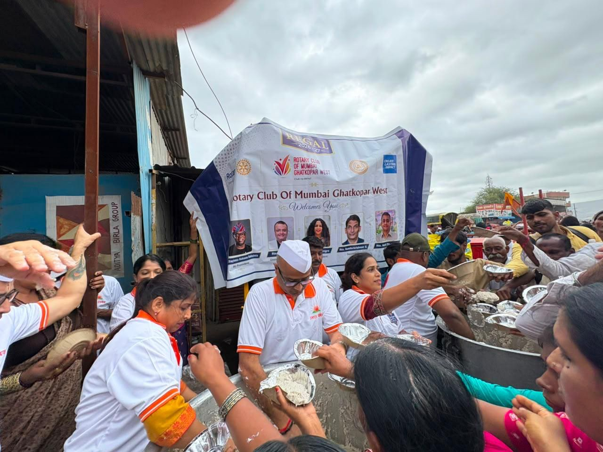

Club Projects
- Projects18
- Beneficiaries59,895
- Amount spent₹119.7 L
- Man hours5,735
18 of 18 projects

Community Service Beach clean-up at Juhu
Volunteers cleared plastic and waste from two kilometres of shoreline.

Community Service Dignity packs for girls
Menstrual hygiene kits and a health talk for girls in municipal schools.

Community Service Vision centre opening
A permanent eye clinic with screening for the neighbourhood.

Vocational Service English speaking course
A twelve-week spoken English course for schoolgirls.

International Service Medical equipment for the civic hospital
Dialysis and monitoring equipment funded through a global grant.

Community Service Food kits for families
Monthly ration kits for families of daily-wage workers.

Community Service Tree plantation drive
Two thousand saplings planted with residents and students.

New Generation Service Mid-day meals for schools
Nutritious meals for children in four village schools.

New Generation Service Goodwill school opening
A new school building with classrooms, toilets and a library.

International Service Flood relief for Dahanu
Supplies and temporary shelter for families after the floods.

New Generation Service Notebooks for students
Notebooks and school kits for the new academic year.

Community Service Food for Warkari pilgrims
Meals and water for pilgrims on the way to Pandharpur.

Club Service New member orientation
A half-day welcome and training for members who joined this year.

Club Service Club leadership training
Training for club presidents, secretaries and directors.
Club Service Fellowship evening
An evening of fellowship with families of members.
Club Service Membership drive
Open house to introduce Rotary to professionals in the area.
Vocational Service Vocational excellence awards
Awards for nurses, teachers and workers who serve with distinction.
Public Image Rotary week on social media
A week of stories about club projects across the district.

No project matches your search.